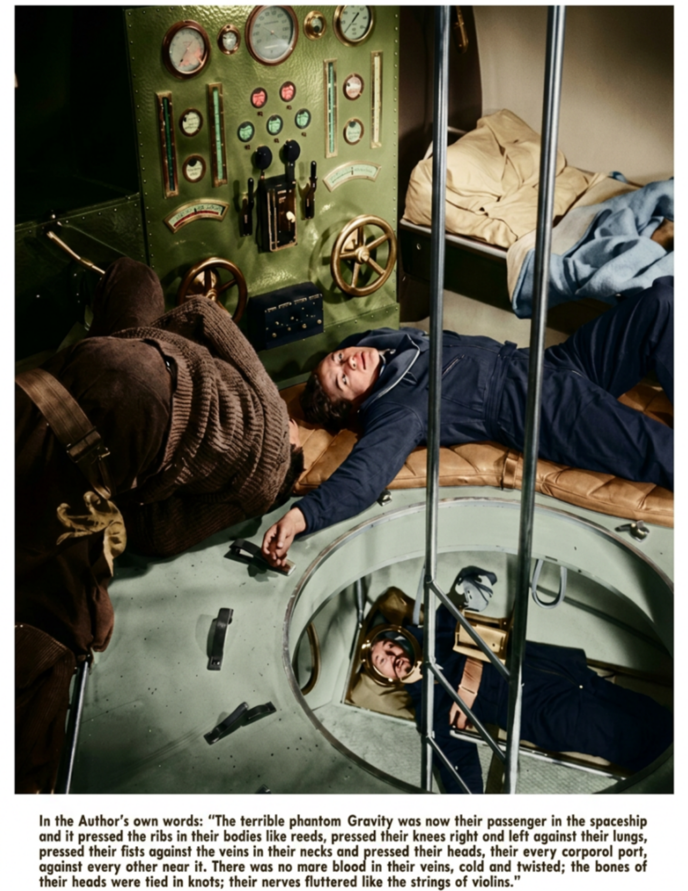

PURE CLASS: pure-u-2-3
P TAG: Intro paragraph for the Spacemen magazine story.

P TAG: Short caption or supporting paragraph after the image.
H1 / HEADLINE TAG
P TAG
PURE CLASS: pure-u-1-2
Left nested paragraph.
P TAG
PURE CLASS: pure-u-1-2
Right nested paragraph.